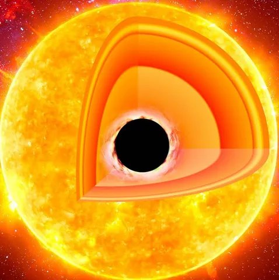

"Dive into the World of Creativity and Innovation"
Explore in-depth articles, tutorials, and discussions on the latest trends in technology, lifestyle, and personal growth.
Start ExploringLatest Blogs

What are the best Practices while coding?
Learn about industry standards of coding websites and the common errors made by most of the..
Read MoreIs the Tesla Bot the centuries Best innovation?
The last century has set the standard of innovation pretty high and with the the new Tesla bot the bar just got higher..
Read More

Does the sun host a blackhole at its center?
In 1971, Stephen Hawking suggested that a mini black hole from the early universe could be lurking at the center of the..
Read More